The goal was to set up a simple and practical online portfolio for the course. I decided to use this assignment as an opportunity to build my whole professional portfolio rather than just a course page. I used HTML5 and GitHub Pages to create this entire website, so everything you see here beyond this specific course represents work that came out of this portfolio project. It let me showcase my web development skills while having a proper home for all my creative work.
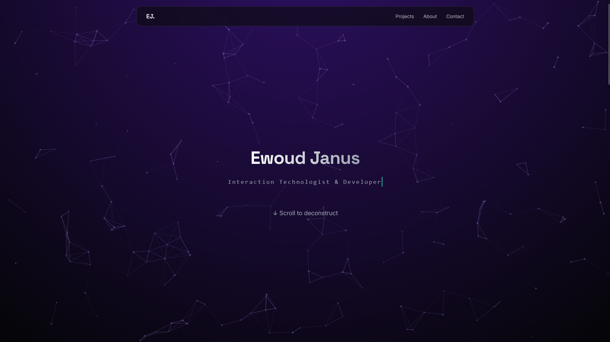
Assignment 1.1Completed
Tinkering Spaces (Photo Safari)
For this assignment I thought back to places where I used to tinker and that were meaningful to me. I was thinking less about physical tinkering and more about the spaces where I tinker mentally with ideas and problems. Each space represents a different mode of thinking and making, all of which have influenced how I approach design.
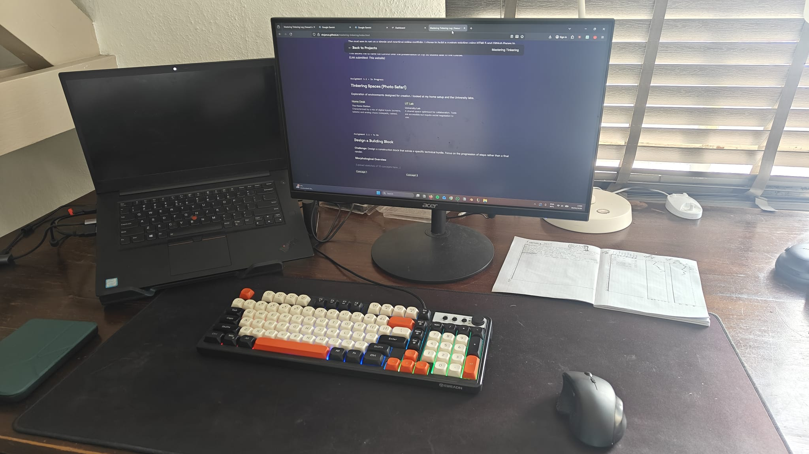
The Desk
This is where I can try whatever I like. It is the dedicated space for tinkering with whatever new technical obsession has captured my interest that week.
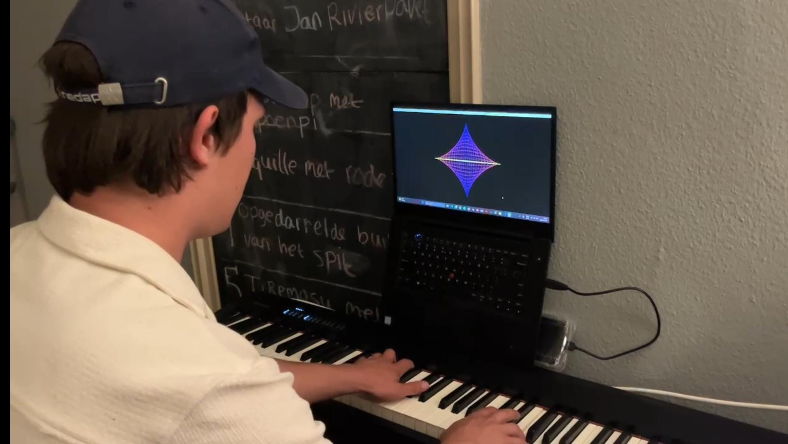
The Piano
The place where I feel most at ease. It allows me to relax and tinker purely with music, rhythm, and flow.
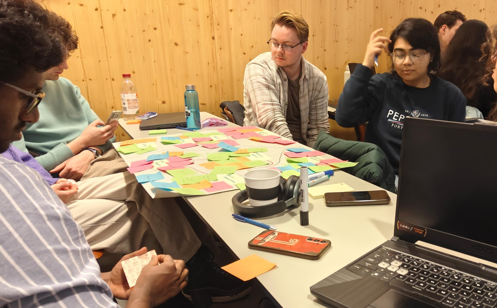
The Classroom
A space for talking and socializing. This is where I go to learn from other people's insights and bounce my own ideas off a group.
Assignment 2.1Completed
Design a Building Block: Screw Shapes
Challenge: Design a block that can be used for tinkering and quick prototyping.
I went through around ten different design concepts, trying out various ways to connect pieces. I experimented with flexible connections, rigid ones, permanent attachments, and temporary ones. I ended up combining ideas from my 9th and 10th sketches, and settled on a screw based design. I chose screws because they're really good for quick iteration. You can swap different shapes and sizes in and out really fast, but they're still strong enough to hold things together properly. Unlike permanent connections, you can quickly take them apart and rebuild, which is what makes them good for tinkering. I also used AI to generate some 3D renderings to visualize how the design would actually look and work.
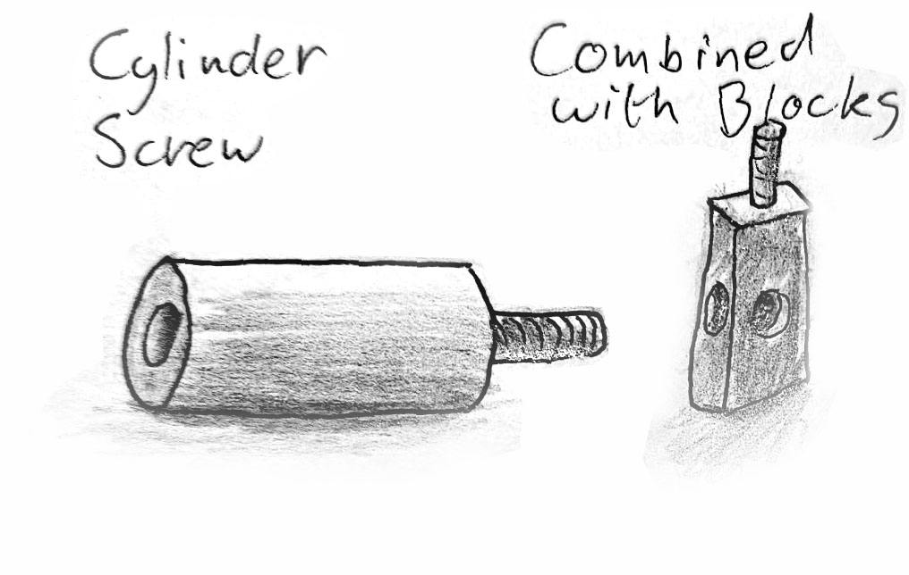
Final Design: The screw shapes help iterate quickly.
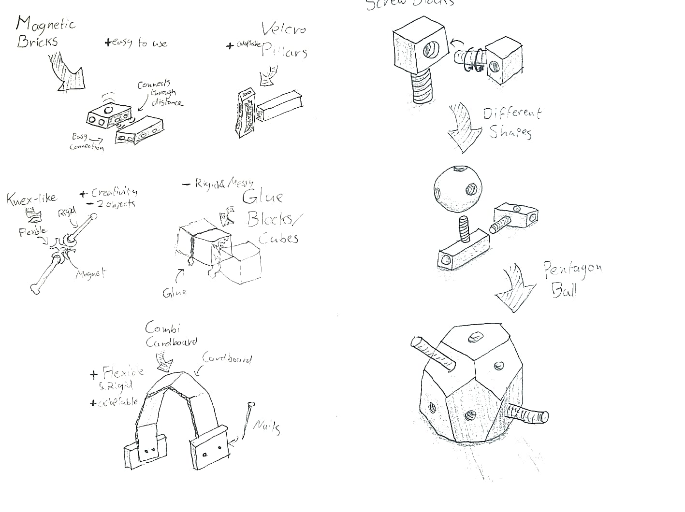
Process: Exploring different shapes and connection types.
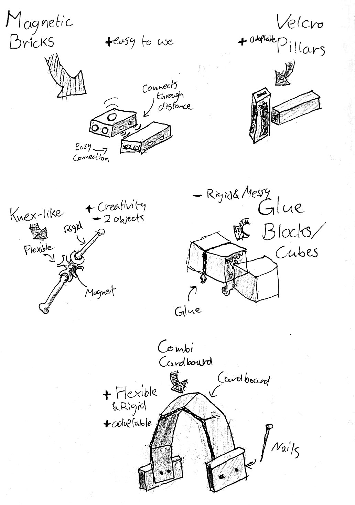
More Ideas: Brainstorming alternative attachments like magnets, velcro, and cardboard.
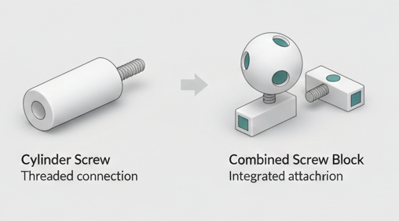
AI Rendering: Using AI to visualize material textures.
Assignment 2.2Completed
Design a building block - fabricate
To bring my "screw shapes" concept into the physical world, I created a lo-fi prototype. I started by cutting basic shapes (cubes and blocks) out of wood. I then drilled holes into specific faces and attached standard screws using a glue gun.
The Tinkering Process: During assembly, I quickly realized that the spacing and depth of the screws were crucial for stability. I spent a good amount of time just playing around with different hole placements, testing how the pieces slotted together before committing to the final glue-up. This messy, hands-on iteration helped me discover the physical constraints of the material, something that looked perfect in my digital sketches didn't always friction-fit well in reality.
Finally, to add an extra layer of "tinkerability," I finished the blocks with a coat of black chalk paint. This allows the user to draw, write, or erase labels on the blocks themselves, rapidly changing their meaning or function on the fly during a brainstorming session.
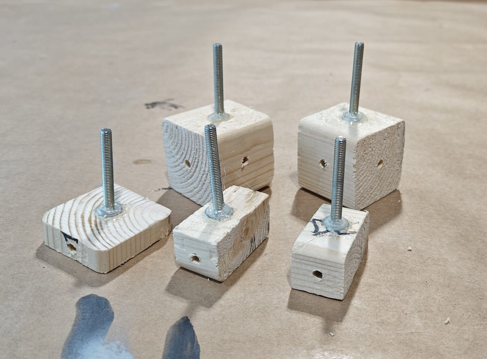
1. Raw Assembly
Wood blocks with screws attached via hot glue.
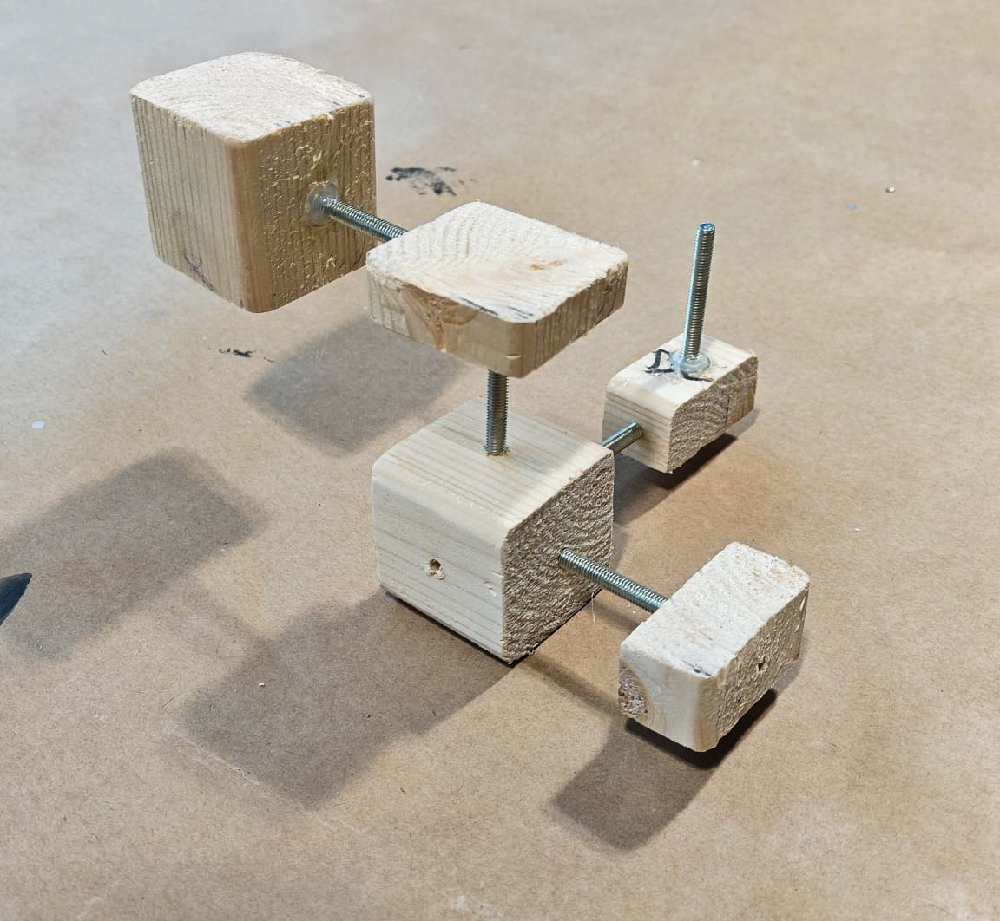
2. Testing the Fit
Playing around with the locking mechanism to test structural stability.
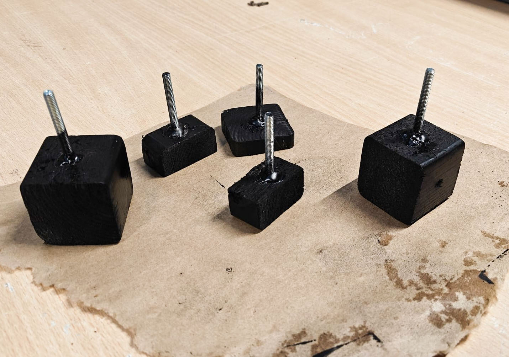
3. Chalk Paint Finish
Coated in chalk paint so the faces can be drawn on and customized.
Final Result
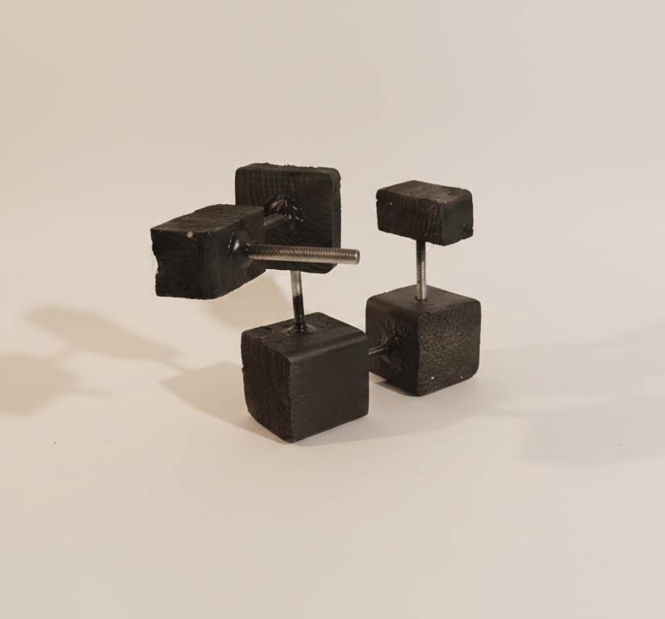
Complete Project
The finished building blocks with chalk paint coating, ready for rapid prototyping and ideation sessions.
Assignment 3.1Completed
Properties of Tinkering Materials
Based on our discussions during the course, we evaluated several existing tinkering sets to identify which material properties score highest and lowest across different affordances.
Material
Self-guiding
Preciousness
Skills-needed
Interoperable
Novelty
Threshold / Ceiling
Totem Maker Kit
Pretty self-explanatory, but some mistakes were easily made.
Made of metal, feeling precious/expensive. Not cheap, but offers abundant parts.
Barely any; just requires understanding how to connect stuff. (++)
Its strongest suit. It allows you to connect easily with other tinkering tools.
Not highly novel (mostly connector pieces), but the included saw is a nice touch.
Low threshold to step in, but the ceiling isn't very advanced. Got boring quickly.
Minecraft Maker Kit
Confusing. Felt like it was missing parts; could not do much with it.
Materials felt expensive and fragile—not made to be messed around with heavily.
Required prior understanding of coding and technology to use effectively.
Could be linked to a Raspberry Pi, which is nice, but very limited beyond that.
A bit outdated, though the core idea of adapting Minecraft for learning is novel.
The worst part of the kit. Decently high threshold, and you feel played out after a day.
LittleBits
Excellent self-guiding. Just playing around with it made us figure it out instantly.
Materials are expensive and not easily swappable. Low score in this regard.
Helps if you understand music, but you can successfully use it without prior skills.
Potentially USB compatible, but unclear. Quite limited interoperability overall.
Using sound as a primary tinkering medium is highly novel.
Low threshold. We played outside the box, and the ceiling for sound production is quite high.
What struck me most was that LittleBits was the best one for actually tinkering around with, especially if you don't have any prior knowledge or expertise. It just made you curious and want to figure out what was possible. The Minecraft kit, on the other hand, felt more like a marketing product than something designed for real hands-on exploration.
For more context, hands-on photos, and details of our experiments with these specific kits, please see my Lecture 2 Log.
Assignment 2.3Completed
Design a building block - make it interoperable
From Structure to Sound
At the end of the last assignment, I had these functional interlocking wooden blocks with screws, but they didn't really have a clear purpose yet. During a feedback session in class, someone suggested that if I ran strings between them, they could work a bit like atoms in a chemistry model. Since my background is in music, hearing the word "strings" immediately sent me down a completely different path. I realized I could turn my tinkering blocks into a modular kit for building custom stringed instruments.
Designing the Interface
To actually connect strings to the blocks and put them under tension, I needed some kind of adapter. I made a 3D model of a threaded cylinder that can screw directly onto the exposed screws of my wooden blocks. Attached to this cylinder is a small mount designed to hold a standard guitar tuning peg. The idea is that you build a frame out of the blocks, add these adapters, and then use the guitar tuners to tighten the strings across the structure.
Lo-Fi Testing
Before committing to 3D printing and real metal strings, I did some lo-fi testing. I started by stringing rubber bands across the screws. This actually worked pretty well and showed that the block structures could handle basic tension while making a sound.
Then I bought some regular string and yarn to test out non-stretchy materials. In true tinkering fashion, I got completely sidetracked figuring out how to make the threads hold tension properly. I ended up falling down a rabbit hole and learning the basics of crochet and knitting just to try it out! While maybe not directly applicable to building a guitar, it was a great hands-on detour into understanding the material properties of strings.
The Piezo Upgrade
During class, I also got some really nice feedback that pushed the concept a bit further. A wise man suggested using those cheap little sound chips you find in musical greeting cards. It turns out those are basically simple piezo pickups that amplify vibration. So for my next iteration, the plan is to attach those to the wooden blocks. If I combine that with actual metal guitar strings, I can turn these acoustic blocks into customizable electric instruments.
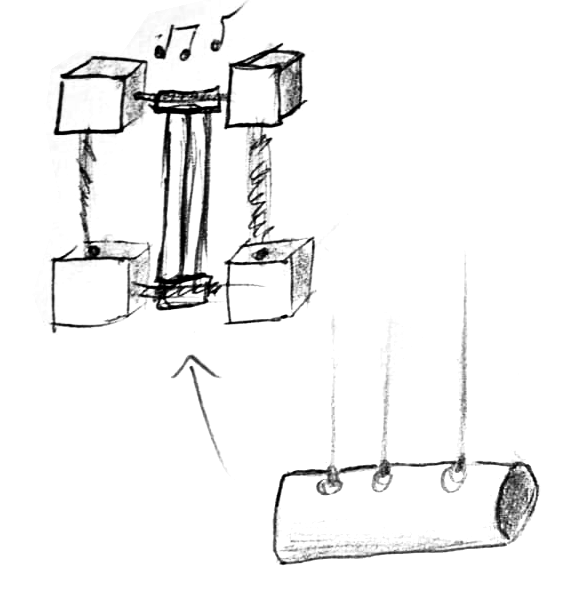
String Layout Sketch
Early sketch exploring how strings could span between the blocks to create modular instrument structures.
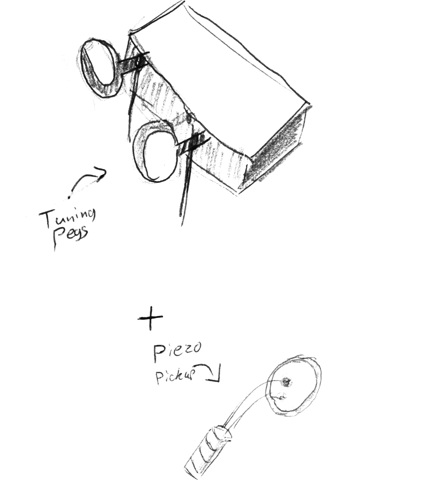
Tuning Pegs + Piezo
Concept image of the next iteration, combining tuning pegs for string tension with piezo pickups for amplified sound experiments.
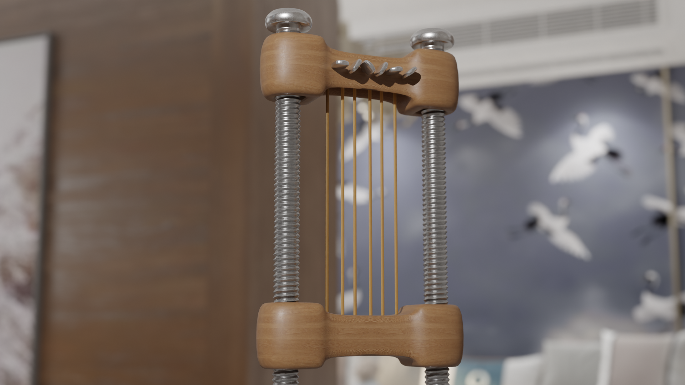
Blender Front View
Render made in Blender showing how a full assembled tinkering block could look like, using rubber bands in this case.
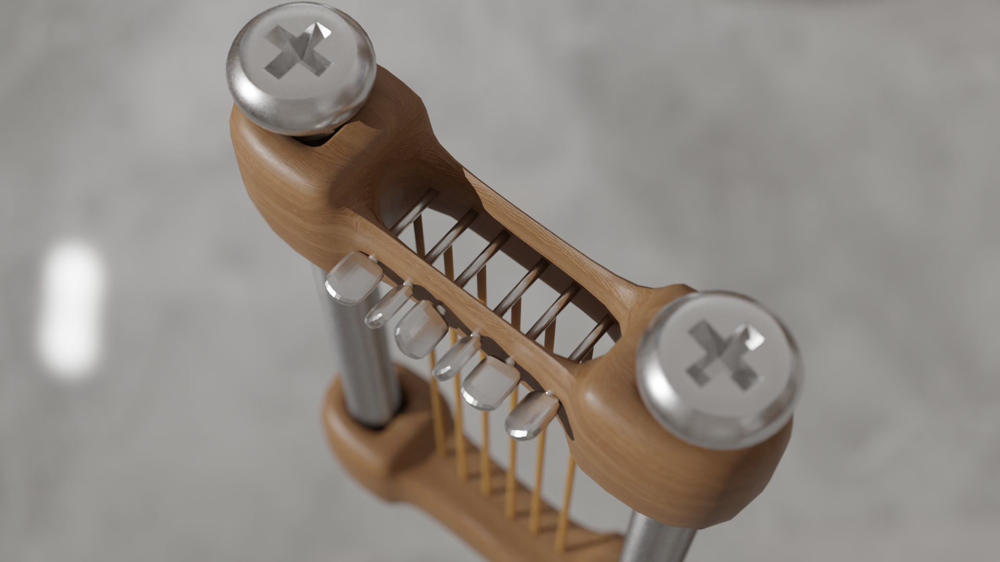
Blender Top View
Rendered of the top of the blocks where the strings are attatched and where you can tension them using guitar like tensioners.
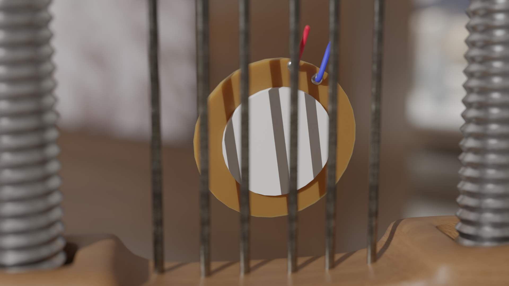
Blender Piezo Integration
How an addition of a small cheap piezo could look like using metal strings for emplified sound and wider walls.
Assignment 3.2Completed
Properties of Tinkering Materials - extension
Continuing from the initial material evaluation in Assignment 3.1, I took a deeper look at three additional properties—Modularity, Interfaces, and Interoperability—for the same tinkering kits.
Modularity
Material
Modularity
Totem Maker Kit
It was mostly raw structural materials like beams, screws, and bolts. You can change a lot and link things together, but the parts aren't really self-contained, so you can't swap functional things out very quickly.
Minecraft Maker Kit
This one was mostly just for visualizing builds IRL. It was quick, and each magnetic block did exactly what it had to do, but it's basically just blocks with magnets to visualize things.
LittleBits
Really nice. Each block contains a separate, interesting part (like a sensor or a motor) making it super easy to change out components and build upon your previous iterations.
Interfaces
Material
Interfaces
Totem Maker Kit
The nuts and bolts interface gives it a lot of structural rigidity and makes it possible to create complex frames, but this definitely takes away from the speed of tinkering.
Minecraft Maker Kit
Really quick to use. The magnets are nice to just quickly swap blocks around or try out different builds on the fly.
LittleBits
The magnetic quick connection is really well and sleekly done. It's almost the pinnacle of how you want an interface to work for rapid iteration—you just snap them together and they instantly work.
Interoperability
Material
Interoperability
Totem Maker Kit
Because it's built upon the default hardware we use in the real world (standard screws, threads, and bolts), it's really nice to integrate with other building blocks, standard tools, or random materials you might have lying around.
Minecraft Maker Kit
The blocks work well with each other, but the magnets are way too weak to really clamp something else in between them. You could maybe stick one on a fridge, but I wouldn't really call it interoperable.
LittleBits
Out of the box, it mostly only works with what you have in the kit. There are specific modules out there (like AUX outputs for sound or bits for alligator clips) that let you break out of the ecosystem, but generally, the basic magnetic connection is pretty closed off to non-LittleBits materials.
Assignment 4.0Completed
Scaffolding material: programming metaphor
For this assignment, I tried making a physical metaphor for boolean logic using some string, metal wire, rubber bands, and other household items. I wanted to make the concept of boolean logic a bit more tangible. The setup is pretty simple, which explains the basic logic gate functions.
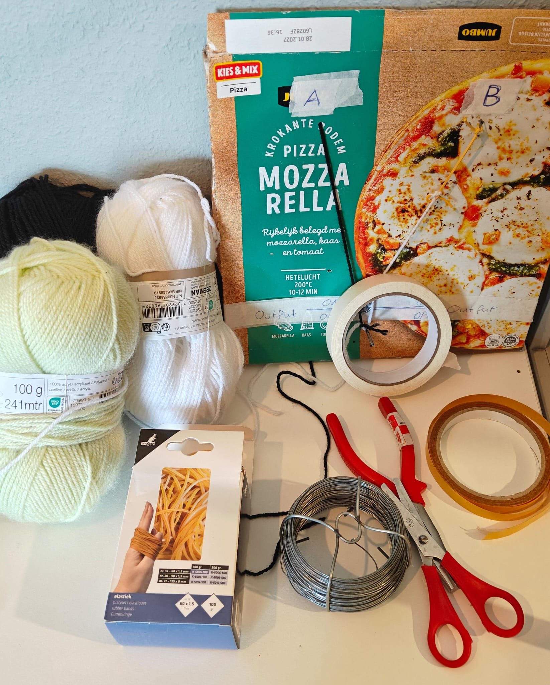
Materials Used
Metal wire, rubber bands, scissors, a metal cutter, a pizza box, string, pen, painter's tape, and other household items.
OR Gate
For the OR gate, I pushed two strings through the box as input A and B. Pulling either will move the indicator over the ON or OFF marker.
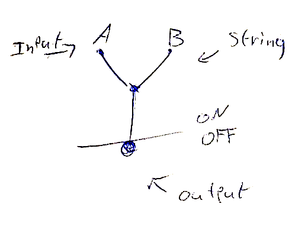
OR Gate Sketch
Concept sketch demonstrating the OR gate mechanics.
OR Gate Demonstration
Video showcasing the functional OR gate model in action.
AND Gate
The AND gate was a bit trickier, but by using a zip tie, I could create a loop. Only pulling both input A and B would result in the output "turning" on.
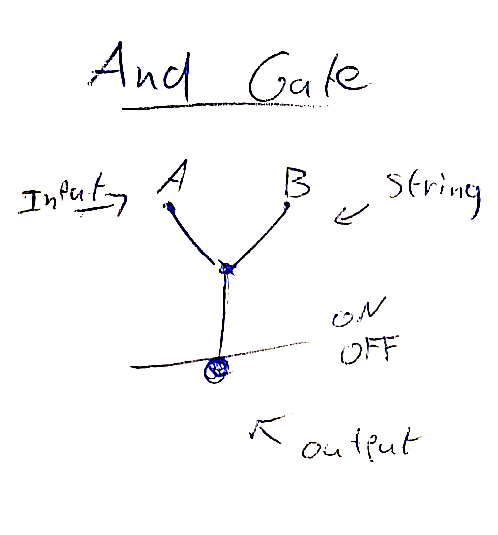
AND Gate Sketch
Concept sketch demonstrating the AND gate mechanics.
AND Gate Demonstration
Video showcasing the functional AND gate model in action.
NOT Gate
For the NOT gate, I used a rubber band so the default result would be ON. Only pulling the string through input A would make the indicator show OFF.
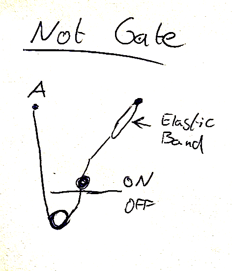
NOT Gate Sketch
Concept sketch demonstrating the NOT gate mechanics.
NOT Gate Demonstration
Video showcasing the functional NOT gate model in action.
For each gate, I tried it out and made a video showcasing this. Combining these gates could even make more complex logic circuits possible. (Better materials would be needed, especially as friction builds up quickly.)
Assignment 2.4Completed
Design your building block - evaluate
To evaluate my electro-acoustic building blocks, I looked at the design through the lens of the material properties we discussed in class. The following notes were made of the feedback in class and how to improve for this design..
Self-guiding
Tensioning the strings is pretty intuitive because the design uses standard guitar tuning pegs, which most people are already familiar with. However, setting up the electrical extensions (like wiring the piezo pickups) is not as obvious and would likely require a bit more explanation or a manual to get right.
Preciousness
Very low. The materials (wood, standard screws, simple strings) are cheap and easy to source. I actually expect parts like the strings to snap or break over time, and the design embraces that. Because nothing feels expensive or fragile, users should not be afraid to be messy and push the limits of the materials.
Skills-needed
You only need a very basic understanding of how strings vibrate to get started. However, to get a genuinely good sound out of the blocks, the user is expected to learn (or already know) a bit about music theory, chords, and how to process digital audio signals.
Interoperable
The core connections rely on standard hardware screws, which is great because you can attach them to almost any scrap material. The tensioners can hold any type of string, yarn, or rubber band, and the AUX output for the audio is a universal standard. The custom 3D-printed adapters are pretty specific to this kit, but overall, it plays well with the outside world.
Novelty
I think an instrument creation toolkit is highly novel. It offers a completely different, hands-on way to learn about acoustics and music theory. Combining that physical experimentation with the electrical components makes the whole experience really interesting.
Threshold / Ceiling
The kit has a really nice range. The threshold is low: you can literally stretch a rubber band across two blocks and get your first "sound" in a matter of minutes. But the ceiling is high; building a properly tuned, electric instrument requires a lot of tweaking, learning, and iteration.
Modularity
It is a bit of a mixed bag. The main blocks and the piezo sensors are quite easy to swap out. The biggest bottleneck right now is the strings themselves; it is inherently difficult to quickly swap out a component that needs to be perfectly tensioned to function.
Interfaces
Right now, the physical frame relies entirely on screws to handle the tension of the strings, which works well. However, thinking through this evaluation made me realize a flaw: the electronic parts (like the battery pack or the piezo pickup) do not need to endure that same physical tension. In future iterations, I could use magnets or simple push-pins for the electronics. That would make the interface for the electrical components much faster for rapid prototyping.
Assignment 3.3Completed
Properties of Tinkering Materials - wide walls
When talking about tinkering materials, wide walls is an important dimension. A material with wide walls supports many completely different types of projects, styles, and interests. For this assignment, I want to highlight a material I stumbled upon during this tinkering course: yarn and other textile crafts (think crochet, knitting, and weaving).
At its core, crochet and knitting are incredibly simple. It is basically pulling loops or simple knots through other loops. A beginner can learn the basic stitch within a few minutes to make a simple structure. The walls for this material are, however, incredibly wide. With that simple mechanism people are able to create:
Clothes, of course.
3D stuffed animals (amigurumi).
But it has also appeared in unexpected places and projects.
For example, for over a century, mathematicians struggled to create a physical model of a hyperbolic plane. In 1997, mathematician Daina Taimina realized that crochet was the perfect way to represent non-Euclidean geometry. It has also been used to create other complex 3D objects like the Lorenz manifold.
Another story that fascinates me is from the Apollo Guidance Computer in the 1960s. Back then, software could not just be flashed onto a microchip. The code that helped astronauts had to be physically made by hand. NASA and MIT developed core rope memory, where they hired skilled women to literally weave computer software.
To me, the ultimate showcase of wide walls is yarn and the ways it has been used for centuries: a tinkering material that can be used for simple clothes and for bringing astronauts to the moon.
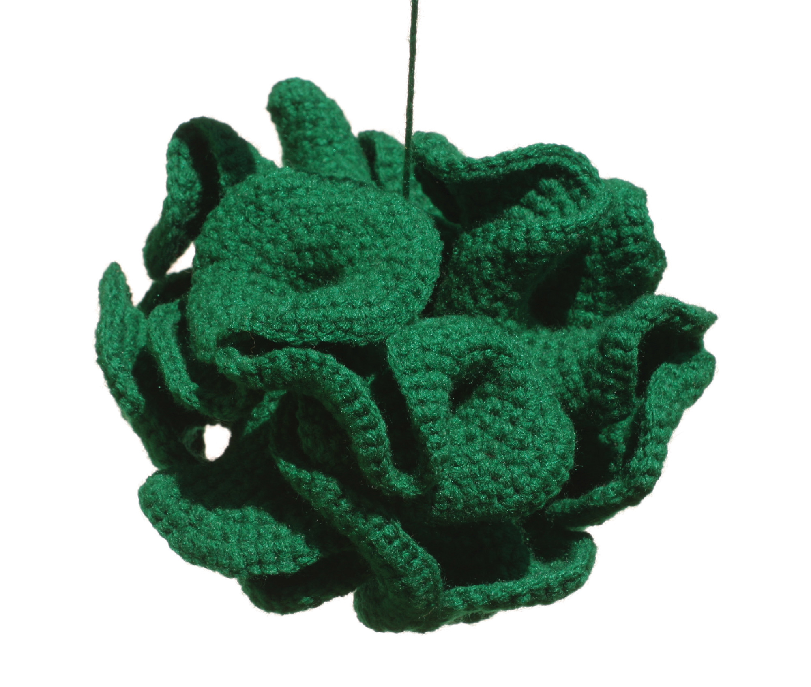
Hyperbolic Geometry in Yarn
Crochet became a powerful way to physically model non-Euclidean geometry.
Apollo Core Rope Memory
Software for the Apollo Guidance Computer was physically woven by hand.
Assignment 5.1Completed
Group Assignment: concept design
Click the thumbnail below to download the full concept design presentation.
My desk is still a good spot, but looking back at it now it is a bit too simple. It is not really a place where I can break stuff or mess around freely. It is still just a bit too clean and precious. While it remains a nice place to tinker with code and digital projects, I learned that a real physical tinkering desk needs to be something else entirely, somewhere you do not mind making a huge mess.
The Piano
I still think music is a very valuable tinkering method and a great way to get into the flow. The piano especially is a perfect example of something with a really low threshold to start playing but a ceiling like almost no other tool. You can just sit down and press a key to get a result. And as you get better you can really get messy with it like when playing jazz, or you can prototype ideas really quickly through improv.
The Classroom
A classroom is obviously not really a place where you go to break physical stuff, but it acts as such an amazing facilitator. Having the presence of peers around you is great for bouncing off ideas and getting unstuck. But of course it lacks the physical tools and the freedom to fail that a place like the Design Lab has. The Design Lab basically takes the social part of the classroom and adds the actual toolbox. I have definitely tinkered way more in a place like that than I ever have in a normal classroom.
Designlab
One of the most collaborative and messy tinkering spaces on the university
Assignment 4.1Completed
Overview on Design Methods
Brainstorming
Brainstorming is the messy part where ideas first come to life. It is the phase where a lot of failures can and should happen. You can do it collaboratively with peers or alone, but it essentially initiates the whole creation process.
Co-design
This method is important because you actively bring in different perspectives. Collaborating directly with users or people from other fields makes you tinker in ways you would never have thought of on your own.
Critical Design
Instead of designing a product to solve a specific problem, critical design is about designing something to ask a question or provoke a debate. It is meant to challenge assumptions and make people think differently about how we use technology or interact with the world.
Research through Design
Learning by doing and breaking things like Lego is definitely a huge part of physical tinkering and material exploration. But Research through Design specifically means using the actual process of designing something to generate new academic knowledge. You build a prototype not just to have a finished product, but to use the prototype itself as a research instrument to answer a bigger question.
Rapid Prototyping
This is basically the physical part of brainstorming. It is about seeing what works and what breaks as fast as possible. You shouldn't be too fancy or detailed here, just keep it quick and dirty. The faster you can physically change things, the more issues you find early on, which ultimately leads to a much better end product.
Iterative Design
This is the broader cycle that heavily relies on rapid prototyping. You just keep changing your design, finding mistakes, learning from them, and making improvements. You have users test it, gather their feedback, and then start the loop all over again until it actually works the way it should.
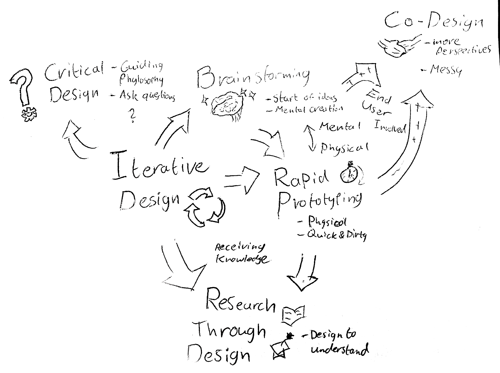
Assignment 5.2Completed
Group Assignment: Physical MVP, first iteration
For our MVP we really wanted to get out of the laptops and onto the table. We are building a tool that lets you quickly and iteratively tinker with website layouts using physical cards. This makes the whole design process way more collaborative, especially for people who have less coding knowledge.
The Physical Cards
We started by creating several sheets of cards and laminating them so they can handle being tossed around and tested. Each card has a specific ArUco code on it that represents a different website component or layout option.
Card Sheets
The initial card designs with ArUco codes before lamination.
Laminated Cards
The finished laminated cards ready for hands-on testing and iteration.
The Technical Setup
We created a custom app to act as the bridge between the physical and digital world. Right now, the app successfully scans the cards on the table. It checks the ArUco codes and is able to see exactly which card is which, where it is placed, and what its orientation is.
The app then successfully sends all this data over to the laptop. We haven't actually built the website generation part yet, so the laptop just receives the raw data and doesn't translate it into a visual website right now. But the core pipeline works! The physical interface is laminated and ready to be played with, and the digital recognition is doing exactly what it should. For our next iteration, we just need to write the script that takes that incoming data and turns it into the actual website layout.
Discussion with Edwin
Getting some much preferred feedback on our system and what it can also be used for in the future.
Creating the cards
A beautiful action shot of me cutting the cards so they can be laminated in the future, don't tell Edwin I was doing this during class!
Assignment 5.2 Poster
Poster to explain the creation of our UI cards.
Assignment 4.2Completed
Tinkering as Design Method in your Field
Challenge 1: Social Robotics
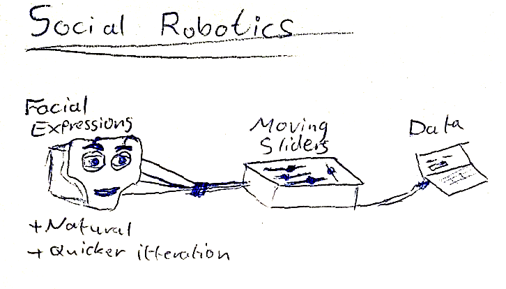
Social Robotics Sketch
Concept sketch showing the puppeteered robot head using sliders.
Next module I will be following a course in social robotics, and I know from previous courses that it is really hard to show empathy, hesitation, or other natural movements through coding; they often look stiff and unnatural. Tinkering could really help because this communication is about organic timing. Doing this through puppeteering can make it quicker to try different movements and make them feel more natural.
Target group: Students and researchers in the I-Tech field.
Toolbox: A 3D printed or cardboard robot head with neck joints, movable eyebrows, eyelids, etc., and a physical board with strings and sliders directly connected to these movements.
Scaffolding: The electronics and some movement commands can be precoded so the user does not have to code anything to start playing and messing around. They get a quick explanation of what the sliders control.
Goal and assignment: As the first assignment, they will be asked to use the sliders to make the robot look confused. These movements will be sent to a computer, and the user will be asked to write down the servo positions to create this pose, which can be used to code an animation digitally for the same movements and can be recreated at a later time by the servos.
Challenge 2: Tangible 3D Clay Modeling
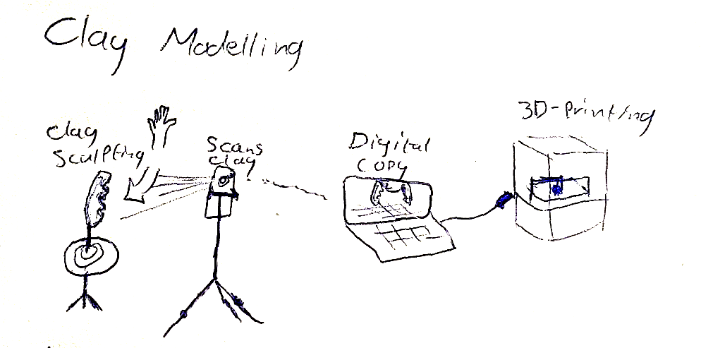
Clay Modeling Sketch
Concept sketch demonstrating the physical clay controller and scanning app.
When doing digital design, it is pretty hard to get a physical intuition. You can make something that looks perfect on screen, but then it fails in real life because it just does not sit right or the ergonomics are weird. Tinkering could help; using clay—a cheap material—could give immediate feedback on the feel of the curves and the volume of the object before you ever have to understand a 3D program.
Target group: Industrial design engineers and 3D artists.
Toolbox: Modeling clay, some wire armature for the skeleton, a rotating disk stand, and a phone with our patent-pending scanning app.
Scaffolding: Give users an already built wire skeleton so their clay does not collapse while they are working, show a 1-minute guide on how to scan the object with the phone, and help out during the assignment.
Goal and assignment: Sculpt an ergonomic handle for a video game controller by using your hands to sculpt it and make it comfortable. Afterwards, try to scan it, maybe even alter it, and if possible, eventually 3D print the controller handle.
Challenge 3: Mini-MIDI
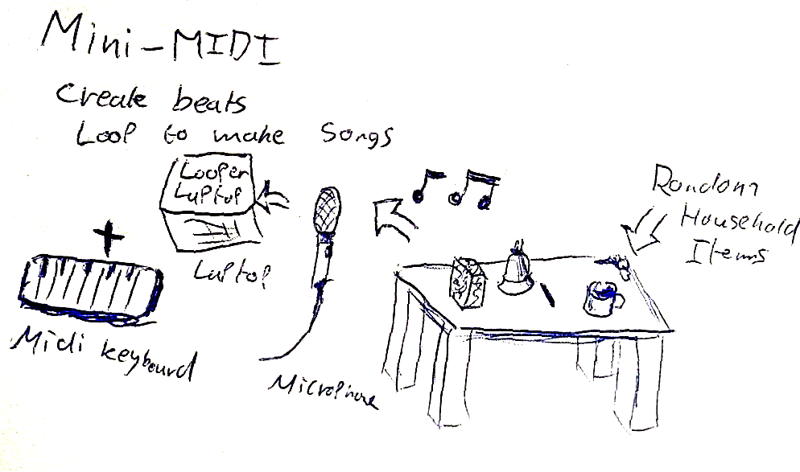
Mini-MIDI Sketch
Concept sketch illustrating the looper, microphone, and MIDI setup.
Music production, especially performances with loopers you sometimes see online from artists like Ed Sheeran or Charlie Puth, often requires quite a bit of knowledge. However, they are a great way to facilitate tinkering through the creative use of objects that make sounds and ways to loop these sounds.
Target group: Music enthusiasts and creative technology students.
Toolbox: A basic MIDI keyboard, a loop pedal, a microphone, and some random materials around you.
Scaffolding: Lock the MIDI keyboard to a specific scale and transpose the sounds from the microphone picking up the random noises to at least make them harmonize together, making the experience more enjoyable from the start.
Goal and assignment: Step away and enjoy making music through creativity. Using piano keys and random sounds, you can create a rhythmic beat and melody using household items around you.
Assignment 5.3Completed
Group Assignment - complete design, digital poster
For our final presentation we showed the complete usage of our UI layout tool. Combining the laminated ArUco cards with a smartphone camera, we built a way to physically tinker with layout generation collaboratively. When the phone scans the placement of the cards, it is immediately sent to a laptop, where a Python script determines the positioning of the cards and the assigned image/text to each card creating the layout you need. An explanation of the setup in the box and the facilitation of us helped make the experience pretty intuitive.
While testing, we found out our project has wider walls than we expected, first built for generating website layouts, but the basic idea of moving physical cards to collaboratively create a digital space can be used for much more. Designing a floor plan for your house or an urban area.
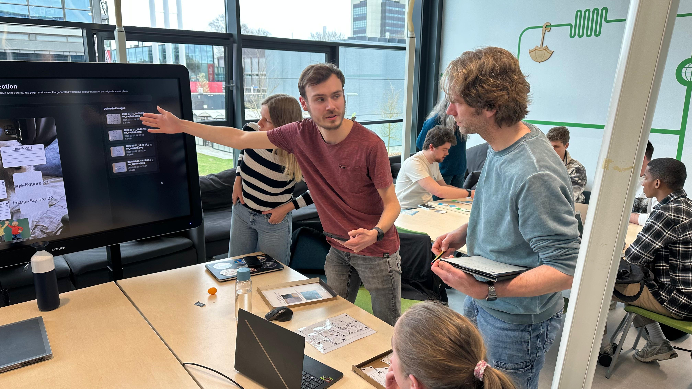
Live demonstration
Showing Edwin how his designed website would look like and how to quickly iterate.
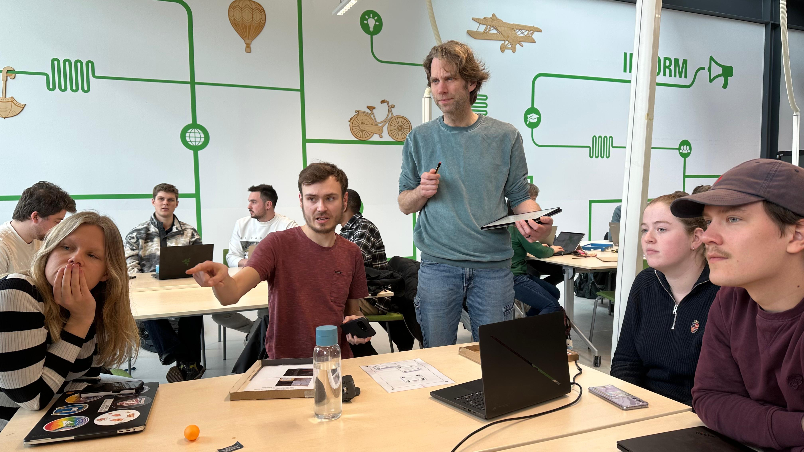
Explanation
Explaining how to preprogram images and text and how the different cards work, how it reads the ArUco code and how rotation is normalized.
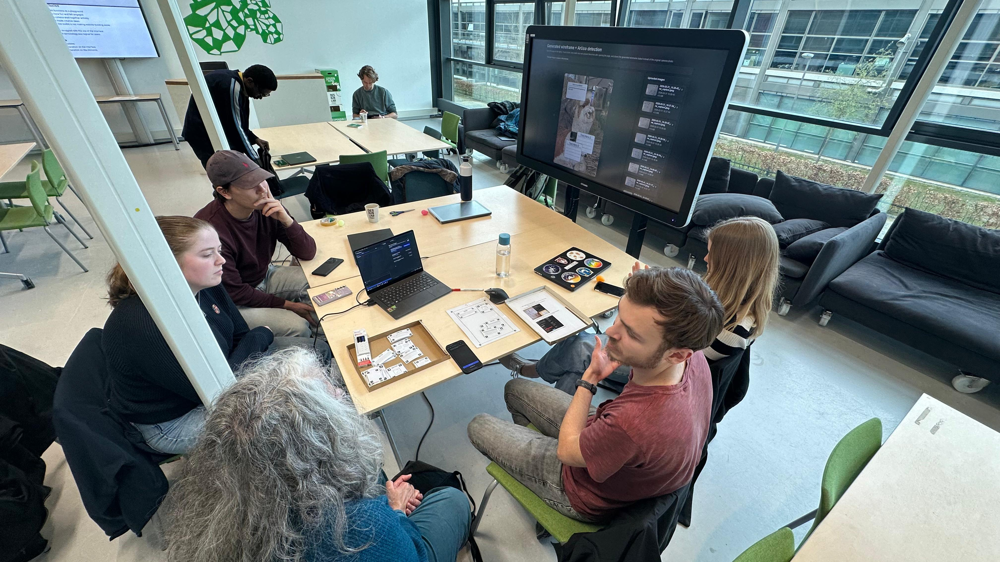
More showcasing
Some students in class and Angelika were able to also try it out.
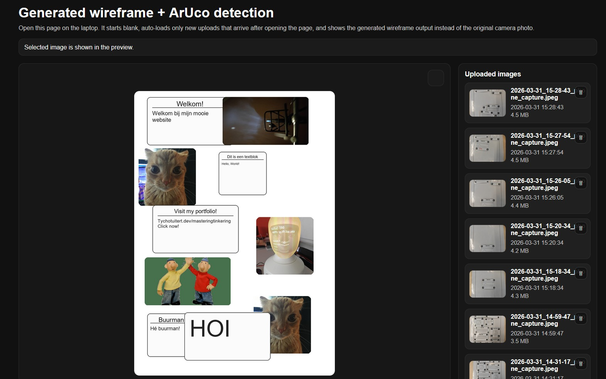
Generated Layout
A screenshot of the laptop showing what it looks like during use and the actual generated layout.
We presented our working prototype and poster to the teachers and students. Showing it live really made it stand out in the insane speed and how well it worked as an almost polished product. I'm quite happy with what our team was able to present. We got positive feedback from the class.
Project Poster
Our digital poster detailing the concept and creation of our UI cards.
Assignment 5.4Completed
Group Project - evaluation
Design Evolution
Our final concept is a physical wireframing kit that bridges the gap between tactile ideation and digital implementation. The primary goal was to untether the design process from the screen during the messy, early stages of brainstorming. The kit is housed in a dedicated box featuring an A4 baseplate anchored by ArUco markers, a set of pre-designed laminated UI components (headers, buttons, etc.), and blank cards for custom sketches using whiteboard markers.
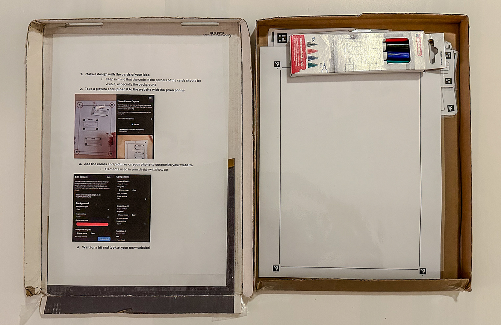
Kit Housing
The dedicated box featuring an A4 baseplate anchored by ArUco markers.
The design underwent significant refinement. We pivoted from standard paper to laminated cards to ensure durability and allow for "on-the-fly" sketching. However, lamination introduced significant glare issues. To solve this on the technical end, we implemented a flashlight toggle and camera selection dropdown, while also snapping card rotations to 90-degree increments to ensure the computer vision stayed accurate despite the reflections.
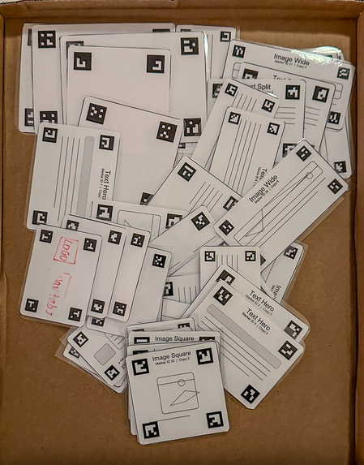
Laminated UI Cards
The set of pre-designed physical UI components and blank writable cards.
Evaluation Strategy
We assessed the system through three distinct lenses:
Technical Benchmarking: Initial stress testing of the laptop-to-phone communication protocol to ensure low-latency data transfer.
Structured User Testing: Conducted during Session 7 with defined roles (facilitator, observers, and participants). We focused specifically on "points of friction," which are moments where participants hesitated or where the physical-to-digital spatial mapping felt off.
The Demo Market: An open format session (Session 8) where peers and instructors interacted with the kit spontaneously. This provided "wild" data on how intuitive the kit is for users who haven't been briefed on the mechanics.
Key Findings
Technical Performance and Accuracy
The "scan-to-page" pipeline proved robust; both Mr. Dertien and Ms. Mader successfully generated functional digital layouts. That said, environmental lighting remains a critical variable. Glare on the cards still occasionally interferes with the CV (Computer Vision) backend, and some users found the underlying logic of how the physical layout was interpreted to be slightly opaque, suggesting the need for a more "invisible" backend process.
UX and Onboarding
The "low floor" of the kit was a major success. Laying cards on a table feels much more natural than navigating software menus, and the blank cards prevented users from feeling restricted by our pre-set components. However, we noticed a gap in the "self-guiding" aspect; despite the physical manual, most users required a 30-second verbal "pitch" before the physical-to-digital loop fully clicked for them.
Versatility (High Ceiling and Wide Walls)
The project demonstrated surprising flexibility. Beyond the "high ceiling" of being able to further refine the digital output on a mobile device, we discovered "wide walls" for the technology. Mr. Dertien noted that the ArUco-based tracking could easily be repurposed for interior design or floor planning. While currently limited to rectangular geometry, the core logic is sound for various spatial design tasks.
The Collaborative Shift
The most impactful result was the change in social dynamics. Unlike traditional screen-based design, where one person drives the mouse while others watch, the kit turned wireframing into a shared, physical activity. Everyone could reach in and move elements simultaneously. The only bottleneck remains the scanning phase: when one person holds the phone to "capture" the design, the collaborative flow briefly pauses as control centralizes to a single device.
Conclusion
Ultimately, the prototype succeeded as a "tinkering playground." It validated that tangible interfaces can make UI design more democratic and collaborative. Our next steps would focus on desensitizing the computer vision to lighting conditions and refining the onboarding to make the kit truly "plug and play."
Assignment 0.2Completed
Portfolio - submission
Acknowledgements
I would like to extend my thanks to E. Dertien and A.H. Mader for their guidance during this module. This work was conducted as part of the 'Mastering Tinkering' course at the University of Twente.
AI Statement
While making this portfolio, I used Gemini as a coding assistant to help build the structure and styling of the website. Additionally, Gemini helped fix grammatical errors for readability. I stand behind all the content written down and thoroughly reviewed and edited where necessary, taking full responsibility for the final version of this webpage.
This statement is included in accordance with the University of Twente Guidelines for using AI during your studies at UT.
/// TERMINAL_01 ONLINE
Initialize Protocol
I am currently open to roles in Creative Technology and Interaction Design.